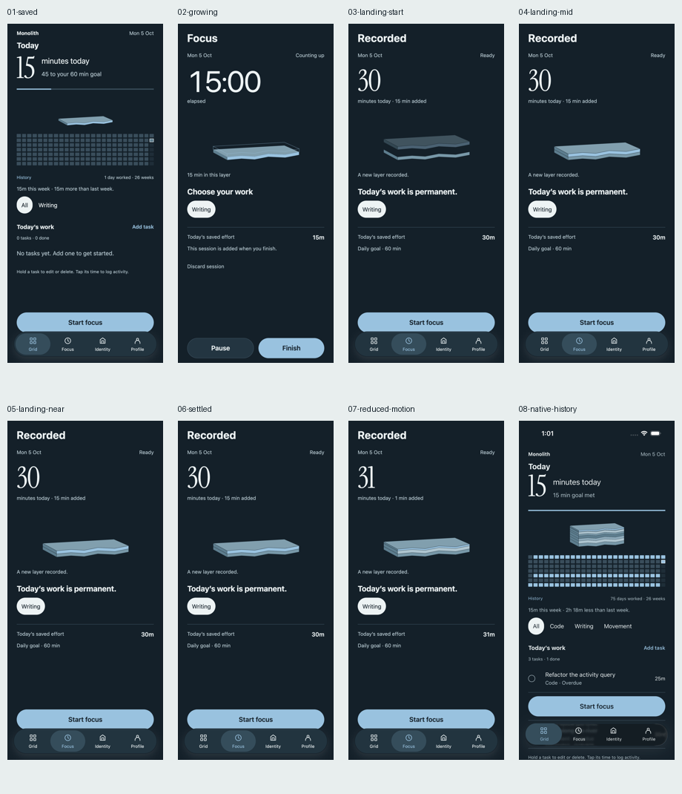

Actual app capture: a paused15minute session is finished. Its outlined layer fills and settles onto the15minutes already saved. Two records,30minutes. This is an isolated browser fixture; native records are preserved.
While focusing, an unsaved outline grows. Saved records stay solid. Reduce Motion dissolves in place. Earlier records compress into the base; recent seven stay distinct. Thickness is illustrative, not a linear time scale.
Save and reduced-motion checks